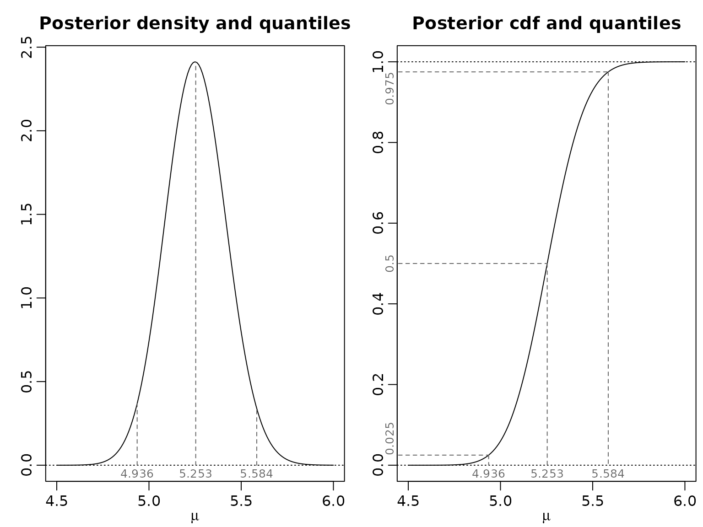
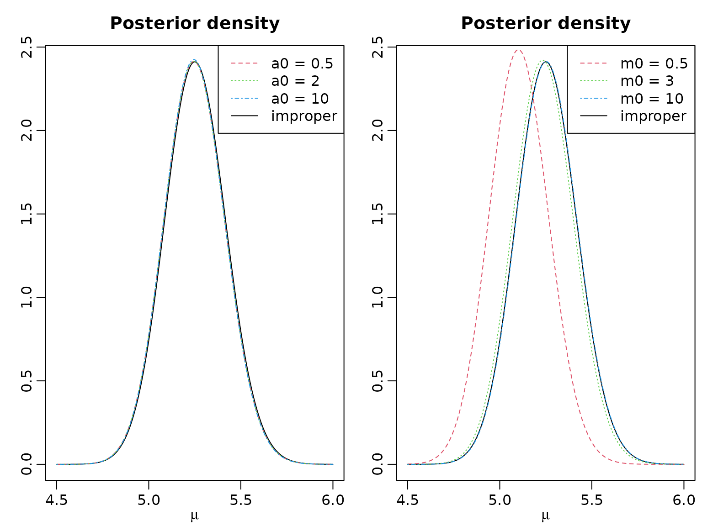
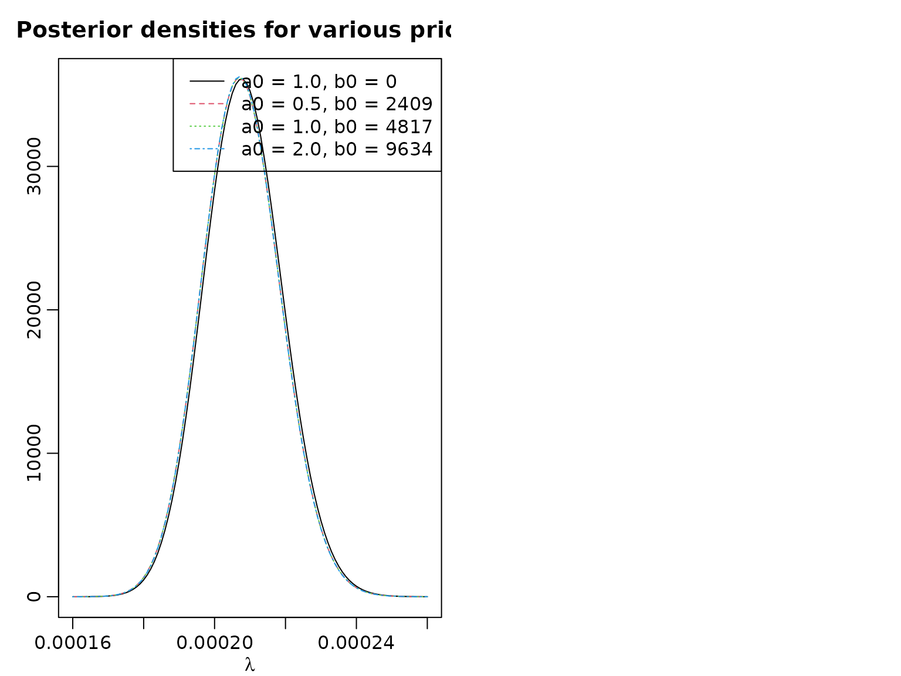
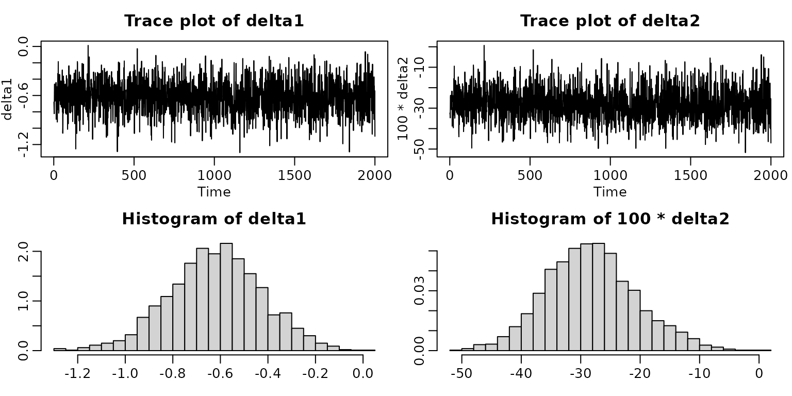

Chapter 2
Chapter02.RmdSection 2.1
Example 2.2: Road Safety Data
Let’s first take a look at the data.
library(BayesianLearningCode)
summary(accidents)
#> children seniors children_exposure seniors_exposure
#> Min. :0.000 Min. : 0.00 Min. :8171 Min. :42854
#> 1st Qu.:1.000 1st Qu.: 3.00 1st Qu.:8678 1st Qu.:43574
#> Median :2.000 Median : 5.00 Median :8900 Median :44097
#> Mean :1.839 Mean : 5.25 Mean :8856 Mean :43890
#> 3rd Qu.:3.000 3rd Qu.: 7.00 3rd Qu.:9103 3rd Qu.:44264
#> Max. :5.000 Max. :15.00 Max. :9204 Max. :44671
plot(accidents[,c(1,3)], main = "Road accidents involving pedestrian children")

Example 2.4: Posterior inference for the Road Safety Data
The posterior under a flat prior is which we visualize for the seniors, along with the 0.05-, the 0.5-, and the 0.95-quantile.
y <- accidents[,"seniors"]
aN <- sum(y) + 1
bN <- length(y)
x <- seq(4.5, 6, by = 0.01)
plot(x, dgamma(x, aN, bN), type = "l", xlab = "", ylab = "",
main = "Posterior density and quantiles")
abline(h = 0, lty = 3)
probs <- c(0.05, .5, .95)
qs <- qgamma(probs, aN, bN)
ds <- dgamma(qs, aN, bN)
for (i in seq_along(probs)) lines(c(qs[i], qs[i]), c(-1, ds[i]), lty = 2)
plot(x, pgamma(x, aN, bN), type = "l", xlab = "", ylab = "",
main = "Posterior cdf and quantiles")
abline(h = c(0, 1), lty = 3)
for (i in seq_along(probs)) {
lines(c(.9*min(x), qs[i]), c(probs[i], probs[i]), lty = 2)
lines(c(qs[i], qs[i]), c(probs[i], -1), lty = 2)
}
Section 2.2
Example 2.8: Including Exposures for the Road Safety Data
We now include the exposure at time , , to estimate the monthly risk of children to be killed or seriously injured via the following likelihood assumption:
Note that we still assume that the data is independently (but not identically!) distributed. We proceed by computing and visualizing the posterior for different prior hyperparameter choices.
y <- accidents[, "children"]
exp <- accidents[, "children_exposure"]
lambdahat <- mean(y)/mean(exp)
a0 <- c(1, 0.5, 1, 2)
b0 <- c(0, a0[-1]/lambdahat)
aN <- a0 + sum(y)
bN <- b0 + sum(exp)
x <- seq(0.00016, 0.00026, by = .000001)
plot(x, dgamma(x, aN[1], bN[1]), type = "l", xlab = "", ylab = "",
main = "Posterior densities for various priors")
for (i in 2:length(aN)) lines(x, dgamma(x, aN[i], bN[i]), lty = i)
hyperparams <- paste0("a0 = ", formatC(a0, 1, format = "f"),
", ", "b0 = ", round(b0))
legend("topright", hyperparams, lty = 1:4)
For all our data-driven priors, we get the same posterior mean. The credible intervals differ slightly.
postmean <- aN/bN
leftpostquant <- qgamma(.025, aN, bN)
rightpostquant <- qgamma(.975, aN, bN)
res <- cbind(leftpostquant, postmean, rightpostquant)
rownames(res) <- hyperparams
res
#> leftpostquant postmean rightpostquant
#> a0 = 1.0, b0 = 0 0.0001870605 0.0002081851 0.0002304234
#> a0 = 0.5, b0 = 2409 0.0001865176 0.0002075970 0.0002297886
#> a0 = 1.0, b0 = 4817 0.0001865321 0.0002075970 0.0002297725
#> a0 = 2.0, b0 = 9634 0.0001865610 0.0002075970 0.0002297405Example 2.9: Including a structural break for the Road Safety Data
We now continue with a Poisson model with a (known) structural break at (that is, in October 1994). Because the data is stored as a time series (ts) object, we can use the window function to conveniently extract the two time frames.
accidents1 <- window(accidents, end = c(1994, 9))
accidents2 <- window(accidents, start = c(1994, 10))
a01 <- a02 <- 1
b01 <- b02 <- 0
aN1 <- a01 + sum(accidents1[, "children"])
aN2 <- a02 + sum(accidents2[, "children"])
bN1 <- b01 + length(accidents1[, "children"])
bN2 <- b02 + length(accidents2[, "children"])
post <- function(x1, x2, aN1, aN2, bN1, bN2) {
dgamma(x1, aN1, bN1) * dgamma(x2, aN2, bN2)
}
mu1 <- seq(1, 3, by = 0.03)
mu2 <- mu1
z <- outer(mu1, mu2, post, aN1 = aN1, aN2 = aN2, bN1 = bN1, bN2 = bN2)
nrz <- nrow(z)
ncz <- ncol(z)
# Generate the desired number of colors from this palette
nbcol <- 10
color <- hcl.colors(10, "YlOrRd")
# Compute the z-value at the facet centres
zfacet <- z[-1, -1] + z[-1, -ncz] + z[-nrz, -1] + z[-nrz, -ncz]
# Recode facet z-values into color indices
facetcol <- cut(zfacet, nbcol)
persp(mu1, mu2, z, col = color[facetcol], ticktype = "detailed", zlab = "",
xlab = "mu1", ylab = "mu2",
phi = 20, theta = -30)
contour(mu1, mu2, z, col = color, xlab = bquote(mu[1]), ylab = bquote(mu[2]))
abline(0,1)
Example 2.10: Obtaining posterior draws for the Road Safety Data
We now proceed with simple Monte Carlo approximation of (nonlinear) functionals of the posterior.
set.seed(1)
nsamp <- 2000
mu1 <- rgamma(nsamp, aN1, bN1)
mu2 <- rgamma(nsamp, aN2, bN2)
delta1 <- mu2 - mu1
delta2 <- 100 * (mu2 - mu1) / mu1
ts.plot(delta1, main = bquote("Trace plot of " ~ delta[1]),
ylab = expression(delta[1]), xlab = "Iteration")
ts.plot(delta2, main = bquote("Trace plot of " ~ delta[2]),
ylab = expression(delta[2]), xlab = "Iteration")
hist(delta1, breaks = 20, prob = TRUE, xlab = expression(delta[1]), ylab = "",
main = bquote("Histogram of " ~ delta[1]))
hist(delta2, breaks = 20, prob = TRUE, xlab = expression(delta[2]), ylab = "",
main = bquote("Histogram of " ~ delta[2]))